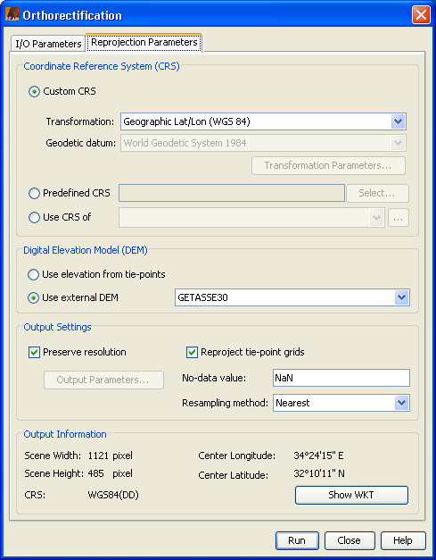

| Orthorectification | |
The orthorectification command applies a selected map projection to a Coordinate REference System and an orthorectification algorithm to the selected source product and creates a new target product. The target product will then contain corrected pixel values with respect to the used Digital Elevation Model (DEM). If you do not want the geodetic correction applied, use the Reprojection.
The orthorectification dialog equals the Reprojection Dialog except that a digital elevation model must be specified.

You can select the digital elevation model which should be used for
orthorectification. Either you use the internal elevation model of
the product or an external DEM. If you select an external DEM and it is currently not installed on your system,
a dialog will appear to enable you to download and install the DEM.
Currently there is only the GETASSE30 DEM available.
Note that a DEM-correction of latitude and longitude can also be done in satellite coordinates using the Create DEM-related Bands action found in the Tools menu.